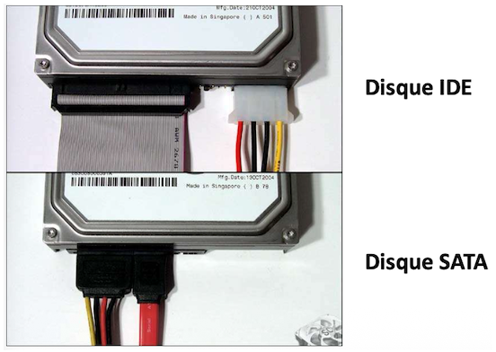
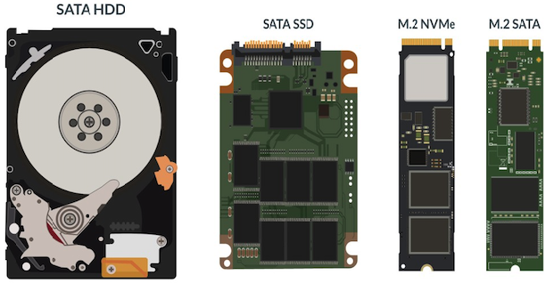
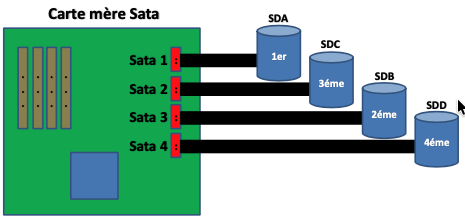
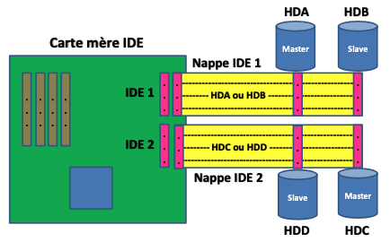

30. V.1 Disques et tables de partitionnement
Sous Linux, la gestion du stockage repose sur l'abstraction des périphériques en fichiers spéciaux, regroupés dans le répertoire /dev. Pour organiser l'espace de stockage d'un disque physique ou virtuel, on le découpe en partitions, dont la structure est définie par une table de partitionnement (de type MBR ou GPT).
Cette section examine le nommage des disques sous Linux, la comparaison détaillée entre les tables MBR et GPT, ainsi que les utilitaires d'administration requis pour la certification LPIC-1 (Objectif 104.1).
30.1 V.1.1 Nommage des disques sous /dev
Linux applique le principe fondamental selon lequel « tout est fichier ». Les périphériques de stockage de masse sont identifiés comme des périphériques en mode bloc (block devices) caractérisés par la lettre b dans le résultat de la commande ls -l /dev :
$ ls -l /dev/sda /dev/nvme0n1
brw-rw---- 1 root disk 8, 0 nov. 10 10:00 /dev/sda
brw-rw---- 1 root disk 259, 0 nov. 10 10:00 /dev/nvme0n1
La désignation du fichier de périphérique dépend de la technologie du contrôleur de disque et du bus utilisé :


src : https://www.linkedin.com/pulse/different-types-hard-drives-mohamed-ibrahimsha/30.1.1 V.1.1.1 Disques SATA, SCSI, SAS et supports USB (/dev/sd*)
La norme actuelle pour les disques durs magnétiques (HDD), disques SSD connectés en SATA/SAS, périphériques SCSI et supports USB amovibles utilise le préfixe sd (SCSI Disk) :
/dev/sda: Premier disque détecté sur le bus./dev/sdb: Deuxième disque détecté./dev/sdc: Troisième disque, et ainsi de suite suivant l'alphabet latin.
Les partitions créées sur ces disques sont désignées par un chiffre ajouté directement au nom du disque :
/dev/sda1: Première partition du premier disque SATA./dev/sda2: Deuxième partition du premier disque SATA./dev/sdb1: Première partition du deuxième disque SATA.

30.1.2 V.1.1.2 Disques NVMe PCIe (/dev/nvme*)
Les SSD modernes connectés directement au bus PCI Express utilisent le protocole NVMe (Non-Volatile Memory Express). Leur nomenclature suit une structure hiérarchique basée sur le numéro du contrôleur et l'espace de noms (namespace) :
/dev/nvme0n1: Contrôleur 0, premier namespace (disque physique 1)./dev/nvme1n1: Contrôleur 1, premier namespace (disque physique 2).
Pour les partitions, une lettre p (partition) est intercalée avant le numéro :
/dev/nvme0n1p1: Première partition du disque NVMe 0./dev/nvme0n1p2: Deuxième partition du disque NVMe 0.
30.1.3 V.1.1.3 Périphériques virtualisés (/dev/vd* et /dev/xvd*)
Dans un environnement virtualisé (machines virtuelles cloud ou hyperviseurs) :
/dev/vda,/dev/vdb: Disques virtuels exploitant les pilotes paravirtualisés VirtIO (KVM, Proxmox, QEMU, OpenStack)./dev/xvda,/dev/xvdb: Disques paravirtualisés sous hyperviseur Xen (notamment sur AWS EC2 historique).
30.1.4 V.1.1.4 Disques IDE / PATA historiques (/dev/hd*)
Bien qu'obsolète sur le matériel moderne, la convention IDE reste au programme théorique LPIC-1 pour comprendre l'historique du noyau :
- Les disques IDE utilisaient le préfixe
hd(Hard Disk). - Sur la première nappe IDE (Primary) :
/dev/hda(Maître / Master),/dev/hdb(Esclave / Slave). - Sur la deuxième nappe IDE (Secondary) :
/dev/hdc(Maître),/dev/hdd(Esclave).

30.2 V.1.2 Outils d'inventaire et de découverte
Avant toute opération sur le stockage, il est essentiel d'inventorier les périphériques reconnus par le noyau.
30.2.1 V.1.2.1 La commande lsblk
La commande lsblk (list block devices) affiche l'arborescence complète des disques, partitions et points de montage associés :
$ lsblk
NAME MAJ:MIN RM SIZE RO TYPE MOUNTPOINTS
sda 8:0 0 223,6G 0 disk
├─sda1 8:1 0 512M 0 part /boot/efi
├─sda2 8:2 0 1G 0 part /boot
└─sda3 8:3 0 222,1G 0 part
├─vg-root 253:0 0 50G 0 lvm /
├─vg-swap 253:1 0 4G 0 lvm [SWAP]
└─vg-home 253:2 0 168,1G 0 lvm /home
sdb 8:16 0 1,8T 0 disk
└─sdb1 8:17 0 1,8T 0 part /data
L'option -f (filesystem) est particulièrement utile pour afficher le type de système de fichiers, le label et l'identifiant unique universel (UUID) :
$ lsblk -f
NAME FSTYPE FSVER LABEL UUID FSAVAIL FSUSE% MOUNTPOINTS
sda
├─sda1 vfat FAT32 B14E-0A33 505,8M 1% /boot/efi
├─sda2 ext4 1.0 89a7f342-30e4-4d8b-90f7-111111111111 742,4M 20% /boot
└─sda3 LVM2_member 3V9u7Q-zQpE-vUfT-7B7W-0123-4567-89abcd
├─vg-root ext4 1.0 df5a0256-42bc-442a-9cb6-222222222222 34,2G 28% /
├─vg-swap swap 1 59e850b5-e427-4a0b-8524-333333333333 [SWAP]
└─vg-home ext4 1.0 97cf2984-7e9b-4395-8859-444444444444 142,5G 9% /home
30.2.2 V.1.2.2 La commande fdisk -l
Pour consulter les tables de partitions et les caractéristiques physiques (secteurs, géométrie) de tous les disques :
$ sudo fdisk -l /dev/sda
Disk /dev/sda: 223.57 GiB, 240057409536 bytes, 468862128 sectors
Disk model: KINGSTON SA400S3
Units: sectors of 1 * 512 = 512 bytes
Sector size (logical/physical): 512 bytes / 512 bytes
Disklabel type: gpt
Disk identifier: B5092A72-9E11-4712-B67B-647900AC4A72
Device Start End Sectors Size Type
/dev/sda1 2048 1050623 1048576 512M EFI System
/dev/sda2 1050624 3147775 2097152 1G Linux filesystem
/dev/sda3 3147776 468860927 465713152 222.1G Linux LVM
30.2.3 V.1.2.3 La commande lsusb
La commande lsusb (list USB) recense les contrôleurs et l'ensemble des périphériques branchés sur les bus USB (clés USB, disques durs externes, lecteurs de cartes, etc.). Elle permet de confirmer qu'un support amovible est bien reconnu par le matériel avant de le manipuler avec lsblk :
$ lsusb
Bus 002 Device 001: ID 1d6b:0003 Linux Foundation 3.0 root hub
Bus 001 Device 003: ID 0781:5581 SanDisk Corp. Ultra
Bus 001 Device 002: ID 046d:c52b Logitech, Inc. Unifying Receiver
Bus 001 Device 001: ID 1d6b:0002 Linux Foundation 2.0 root hub
Options utiles :
-t: Affiche la hiérarchie des bus USB sous forme d'arborescence avec les pilotes du noyau utilisés (ex.usb-storage) et le débit négocié.-v: Affiche les informations techniques complètes (verbose) sur les descripteurs des périphériques.
30.3 V.1.3 Tables de partitionnement : MBR vs GPT
Une table de partitionnement est une zone réservée sur le support qui enregistre l'emplacement de début, de fin et le type de chaque partition.
+-------------------------+-------------------------+
| MBR (Historique / BIOS) | GPT (Moderne / UEFI) |
+-------------------------+-------------------------+
LBA 0 | Code Bootstrap (446 o) | Protective MBR (512 o) |
| Table Partitions (64 o) | |
| Signature (0x55AA) | |
+-------------------------+-------------------------+
LBA 1 | | Primary GPT Header |
+-------------------------+-------------------------+
LBA 2 | | Entrées Partitions |
..33 | | (128 entrées de 128 o) |
+-------------------------+-------------------------+
| Données & Partitions | Données & Partitions |
| | |
+-------------------------+-------------------------+
LBA -1 | | Backup GPT Header |
| | & Entrées de sauvegarde |
+-------------------------+-------------------------+
30.3.1 V.1.3.1 Le format MBR (Master Boot Record)
Introduit par IBM en 1983, le MBR réside sur le tout premier secteur du disque (LBA 0, soit 512 octets) :
- 446 octets : Code de démarrage du chargeur d'amorçage (Bootstrap code).
- 64 octets : Table de partitionnement proprement dite (composée de 4 entrées de 16 octets chacune).
- 2 octets : Signature magique de validation (
0x55AA).
Limitations structurelles du MBR
- Limite de 4 partitions primaires : En raison des 64 octets disponibles (4 × 16 octets), un disque MBR ne peut contenir au maximum que 4 partitions dites primaires (primary).
- Partition étendue (extended) et lecteurs logiques : Pour contourner cette limite, une des 4 entrées primaires peut être définie comme une partition étendue. Celle-ci ne contient pas directement de système de fichiers, mais sert de conteneur pour des partitions logiques (logical partitions).
- Numérotation stricte des partitions en MBR :
- Les partitions primaires et la partition étendue sont obligatoirement numérotées de 1 à 4 (
sda1àsda4). - Les partitions logiques sont impérativement numérotées à partir de 5 (
sda5,sda6, etc.), même si le disque ne compte qu'une seule partition primaire !
- Les partitions primaires et la partition étendue sont obligatoirement numérotées de 1 à 4 (
-
Limite de capacité à 2,2 To : L'adresse de bloc logique (LBA) étant codée sur un entier 32 bits avec des secteurs de 512 octets : Taille maximale = 2^32 x 512 octets soit approx 2,19 To (2 TiB). Tout espace situé au-delà de 2,2 To est inaccessible en MBR.
-
Aucune redondance : La corruption du secteur 0 entraîne la perte immédiate de la table de partitionnement.
30.3.2 V.1.3.2 Le format GPT (GUID Partition Table)
Le format GPT fait partie intégrante de la spécification UEFI (Unified Extensible Firmware Interface) et s'affranchit de l'ensemble des limites du MBR :
- Capacités gigantissimes : Adressage LBA sur 64 bits. Avec des secteurs de 512 octets, la limite théorique atteint 2^64 x 512 octets = 9,44 Zo (Zettaoctets).
- 128 partitions par défaut : Aucune distinction entre primaire, étendue ou logique. Chaque partition est identifiée par un identifiant global unique (GUID / UUID).
- Sécurité et intégrité :
- Protective MBR : Le secteur LBA 0 conserve un MBR factice recouvrant tout le disque comme une seule partition inconnue de type
0xEE. Cela empêche les anciens outils MBR de considérer le disque comme vierge et de l'écraser. - Sauvegarde en fin de disque : L'en-tête GPT et la table des partitions sont dupliqués à la toute fin du support physique (Backup GPT). Si le début du disque est altéré, les données peuvent être automatiquement restaurées.
- Sommes de contrôle CRC32 : Permettent de détecter instantanément toute altération matérielle de la table.
- Protective MBR : Le secteur LBA 0 conserve un MBR factice recouvrant tout le disque comme une seule partition inconnue de type
30.3.3 V.1.3.3 Synthèse comparative MBR vs GPT
| Critère | MBR (Master Boot Record) | GPT (GUID Partition Table) |
|---|---|---|
| Norme associée | BIOS Legacy | UEFI |
| Capacité maximale | ~ 2,2 To (2 TiB) | ~ 9,4 Zo (Zettaoctets) |
| Nombre de partitions | 4 primaires (ou 3 primaires + 1 étendue) | 128 par défaut (extensible) |
| Types de partitions | Primaires, Étendue, Logiques | Unifiées (identifiées par GUID) |
| Numérotation logiques | Commence obligatoirement à 5 | Séquentielle (1, 2, 3...) |
| Tolérance aux pannes | Aucune (secteur 0 unique) | En-tête de sauvegarde en fin de disque + CRC32 |
| Rétrocompatibilité | Anciens matériels | Protégé par Protective MBR (type EE) |
30.4 V.1.4 Outils de partitionnement sous Linux
La certification LPIC-1 attend de l'administrateur la maîtrise de trois utilitaires fondamentaux : fdisk, gdisk et parted.
30.4.1 V.1.4.1 Utilitaire fdisk (Partitionnement MBR et GPT)
fdisk est l'utilitaire interactif historique. Bien qu'initialement conçu pour le MBR, les versions modernes d'util-linux permettent également de manipuler les tables GPT.
Une fois entré dans le shell interactif de fdisk, les commandes s'exécutent par une lettre :
| Touche | Action | Description |
|---|---|---|
m |
menu | Affiche l'aide complète des commandes interactives. |
p |
Affiche la table des partitions actuelle du disque. | |
n |
new | Crée une nouvelle partition (demande type, premier et dernier secteur). |
d |
delete | Supprime une partition existante. |
t |
type | Modifie le code d'identification du type de partition (ex. 82 pour swap, 8e pour LVM). |
l |
list types | Liste l'ensemble des codes hexadécimaux de types de partitions. |
w |
write | Écrit définitivement les modifications sur le disque et quitte. |
q |
quit | Quitte l'utilitaire sans enregistrer les modifications. |
Indication de taille relative avec +
Lors de la création d'une partition avec n, après avoir validé le premier secteur par défaut, vous pouvez spécifier directement la taille souhaitée plutôt que de calculer le secteur de fin :
Last sector: +5G (pour allouer 5 Gio) ou +500M (pour 500 Mio).
30.4.2 V.1.4.2 Utilitaire gdisk (Partitionnement GPT dédié)
gdisk (GPT fdisk) reproduit fidèlement la même interface interactive que fdisk, mais il est exclusivement optimisé pour les disques GPT.
Les raccourcis essentiels (p, n, d, w, q) sont identiques à ceux de fdisk. La différence principale réside dans les codes de types de partitions, représentés sur 4 caractères hexadécimaux :
8300: Partition de données Linux standard (Linux filesystem).8200: Partition d'échange (Linux swap).8e00: Volume physique LVM (Linux LVM).ef00: Partition système EFI (EFI System Partition - ESP).
30.4.3 V.1.4.3 Utilitaire parted (Mode interactif et scriptable)
parted (GNU Parted) est un outil très puissant capable de manipuler aussi bien les disques MBR (appelés msdos) que GPT. Il présente l'avantage majeur de pouvoir être exécuté de façon non interactive au sein de scripts d'automatisation grâce à son option -s (script) :
-
Création d'une table de partitionnement GPT sur /dev/sdb
-
Création d'une partition ext4 de 10 Gio commençant à 1 Mio (alignement optimal)
-
Affichage de la table des partitions
Attention avec parted
Contrairement à fdisk et gdisk qui conservent vos actions en mémoire tampon tant que vous n'avez pas tapé w, parted applique immédiatement chaque commande sur le disque physique. Toute modification est instantanée et irréversible !
30.5 V.1.5 Prise en compte immédiate des partitions : partprobe
Lorsqu'un disque contenant des partitions en cours d'utilisation est repartitionné, le noyau Linux continue d'utiliser en mémoire l'ancienne table des partitions pour des raisons de sécurité.
Pour forcer le noyau à relire la nouvelle table des partitions sans nécessiter de redémarrage complet de la machine, on utilise la commande partprobe :
Alternativement, l'utilitaire partx permet de mettre à jour la vue du noyau :